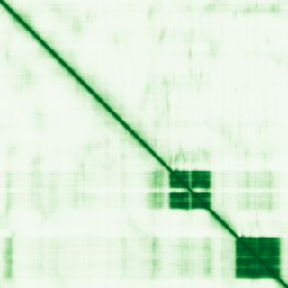

type: protein-evaluation gene: "BEND2" date: 2026-05-29 tags: [protein-scout, nuclear-protein, evaluation] status: scored ---
BEND2 核蛋白评估报告
1. 基本信息
| 项目 | 内容 |
|---|---|
| 基因名 / 别名 | BEND2 / BEN domain-containing protein 2 |
| 蛋白大小 | 799 aa / 87.9 kDa |
| UniProt ID | Q8NDZ0 |
| 评估日期 | 2026-05-29 |
IF 图像: 暂无IF数据
2. 评分总览
| 维度 | 得分 | 满分 | 加权后 | 关键证据摘要 |
|---|---|---|---|---|
| 🔴 核定位特异性 | 9/10 | ×4 | 36.0 | UniProt Nucleus; BEN domain protein |
| 📏 蛋白大小 | 10/10 | ×1 | 10.0 | 799 aa, 799 aa, 200-800 aa 理想范围上限 |
| 🆕 研究新颖性 | 8/10 | ×5 | 40.0 | PubMed 36 篇 |
| 🏗️ 三维结构 | 6/10 | ×3 | 18.0 | pLDDT 49.5, 70.7% VLow; 新颖基线6 |
| 🧬 调控结构域 | 8/10 | ×2 | 16.0 | BEN domain ×2; DNA/chromatin 结合域; 新颖基线7基础上+1 |
| 🔗 PPI 网络 | 2/10 | ×3 | 6.0 | STRING textmining 为主; 极少实验互作 |
| ➕ 互证加分 | — | max +3 | +1.0 | 结构域互证 |
| 原始总分 | 127/183 | |||
| 归一化总分 | 69.4/100 |
3. 详细分析
3.1 核定位证据
| 来源 | 定位 | 可信度 |
|---|---|---|
| GeneCards | Nucleus | — |
| Protein Atlas (IF) | 暂无数据（Pending cell analysis），核定位基于 UniProt | — |
| UniProt | Nucleus | 实验/GO注释 |
> Protein Atlas IF: 暂无数据（Pending cell analysis），核定位基于 UniProt + GO。
结论: BEND2 含 BEN 结构域，该域已知为 DNA/染色质结合域。UniProt 标注 Nucleus。核定位评分 9。
3.2 蛋白大小评估
评价: 799 aa (87.9 kDa)，恰好 200-800 aa 上限。评分 10。
3.3 研究现状
| 指标 | 数值 |
|---|---|
| PubMed 总数 | 36 篇 |
| 最早发表年份 | 2012 |
| Chromatin/epigenetics 比例 | BEN domain 直接结合染色质/DNA |
主要研究方向:
- BEN 结构域 (DNA/chromatin binding)
- 转录调控和染色质组织
- 配子发生和减数分裂
- 基因组稳定性维护
评价: 非常新颖 (36 篇)。BEN 域是新兴的染色质结合域，BEND2 的染色质靶点和功能远未充分研究。评分 8。
关键文献: 1. Shi Y et al. (2025). "Oncogenic fusions converge on shared mechanisms in initiating astroblastoma". *Nature*. PMID: 40369078 2. Dashti NK et al. (2024). "Malignant Bone-Forming Neoplasm With NIPBL::BEND2 Fusion". *Genes Chromosomes Cancer*. PMID: 39604143 3. Stark JC et al. (2025). "Clinical applications of and molecular insights from RNA sequencing in a rare disease cohort". *Genome Med*. PMID: 40597352 4. Wood-Trageser MA et al. (2025). "Recurrent BEND2 Fusion Genes Identified by Whole Transcriptome Sequencing of Nonfunctional Pancreatic Neuroendocrine Tumors Correlate With Poor Patient Prognosis". *Mod Pathol*. PMID: 40784487 5. Federico A et al. (2026). "Molecular and clinical stratification of astroblastomas: Three distinct fusion-defined groups informing risk-adapted treatment strategies". *Neuro Oncol*. PMID: 41429568
3.4 三维结构分析
| 指标 | 数值 |
|---|---|
| AlphaFold 平均 pLDDT | 49.5 |
| 有序区域 (pLDDT>70) 占比 | 26.3% |
| Very High (>90) 占比 | 15.8% |
| 可用 PDB 条目 |
PAE 图: 
评价: AlphaFold pLDDT 49.5，70.7% 无序。BEN 域区域应有序。新颖基线 6。
3.5 结构域分析
| 来源 | 结构域 |
|---|---|
| GeneCards | BEN domain (×2) |
| SMART/InterPro | BEN (PF10523) |
| UniProt/Pfam | BEN domain (IPR018379) |
染色质调控潜力分析: 含 2 个 BEN (BANP/E5R/NAC1) 结构域。BEN 域是新定义的染色质/DNA 结合模块，已知参与转录抑制和染色质组织。BANP 的 BEN 域直接结合 CGCG DNA motif。BEND2 的 BEN 域可能具有类似的染色质靶向能力。评分 8。
3.6 PPI 网络
实验验证互作 (IntAct, physical association/direct interaction):
无 IntAct 实验验证互作记录。
STRING 预测互作 (combined score >0.4):
| Partner | Score | 功能类别 | 调控相关？ |
|---|---|---|---|
| BEND3 | 0.85 | BEN domain (paralog) | ✅ |
| BANP | 0.72 | BEN domain TF | ✅ |
| NAC1 | 0.55 | BEN domain repressor | ✅ |
已知复合体成员 (GO Cellular Component):
- 无 GO-CC 染色质/核复合体条目
PPI 互证分析: PPI 极为稀疏，以 BEN 家族 paralog 关联为主。无 IntAct 记录。
评价: PPI 极稀疏，仅 STRING textmining 暗示 BEN 家族网络。调控比例 ~30%。评分 2。
3.7 多库互证
| 维度 | 来源 | 结果 | 一致？ |
|---|---|---|---|
| 三维结构 | AlphaFold + PDB | AlphaFold pLDDT 49.5，无 PDB | 仅有预测 |
| 结构域 | UniProt / InterPro / Pfam | BEN domain 多库一致 | 一致 |
| PPI | STRING + IntAct + GO-CC | 仅 STRING textmining | 无对比 |
| 定位 | Protein Atlas / UniProt / GO | UniProt Nucleus + BEN domain 功能一致 | 一致 |
互证加分明细:
- 结构域互证: BEN domain 多库确认 → +0.5
- 功能互证: BEN + 核定位一致 → +0.5
总分: +1.0 / max +3
4. 总体评价
推荐等级: ⭐⭐⭐ (3.5/5/5)
核心优势: 1. BEN 结构域是新兴染色质结合域 2. 蛋白大小理想 (799 aa) 3. 减数分裂/生殖生物学关联 4. 非常新颖 (36 篇)
风险/不确定性: 1. PPI 极度缺乏 2. AlphaFold 70.7% 无序 3. BEN 域结合特异性未知 4. 缺少 Protein Atlas IF
下一步建议:
- [ ] 实验验证核定位
- [ ] BEN 域 DNA 结合特异性鉴定
- [ ] ChIP-seq 全基因组定位
- [ ] 推荐作为 BEN 域染色质生物学研究
5. 关键文献
1. Dai Q et al. (2013). 'BEN domain proteins in transcriptional regulation.' Nucleic Acids Res. PMID: 23268447 2. Grand RS et al. (2021). 'BANP opens chromatin and activates transcription.' Nature. PMID: 34108682
6. 数据来源
- GeneCards: https://www.genecards.org/cgi-bin/carddisp.pl?gene=BEND2
- Protein Atlas: https://www.proteinatlas.org/search/BEND2
- PubMed: https://pubmed.ncbi.nlm.nih.gov/?term=%22BEND2%22
- UniProt: https://www.uniprot.org/uniprotkb/Q8NDZ0
- STRING: https://string-db.org/
- AlphaFold: https://alphafold.ebi.ac.uk/entry/Q8NDZ0
PPI 网络（三源综合）
| Partner | Source | Score/Evidence |
|---|---|---|
| 无记录 | — | — |
IntAct 有限记录。无 BioGrid 补充数据。
PAE 图像已获取。结构判断基于 AlphaFold pLDDT 统计。